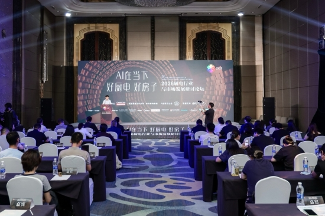

1
厨房智能硬件 · 好房子交付
博西家电三款厨电入选优质供给：DeepSeek 语音蒸烤、全嵌烟机和混烹套系同台
在“AI在当下 好厨电 好房子”论坛后，博西家电将蒸烤、微蒸烤和双吸油烟机放进好房子语境，强调智能交互、嵌入式安全和空间适配。

中国家电网今天发布消息称，博西家电旗下西门子智魔方 Z5 智语蒸烤一体机、西门子 X9 双吸油烟机、博世御器 6 系微蒸烤一体机入选“中国家电网产品库优质供给产品”。
其中，西门子 Z5 接入晶御语音智能体并融合 DeepSeek 大语言模型，覆盖食谱灵感、备菜指导、烹制调控和清洁维护；博世御器 6 系主打 i-DM 智能混烹；西门子 X9 则用超薄全嵌结构适配橱柜平嵌、全嵌等安装模式。
小编有话说这条的价值不在“又多了几款新品”，而是博西把 AI 交互、嵌入式工艺和好房子改造放到一套逻辑里。未来厨电要进整案交付，产品边界会被橱柜、安装、语音和维护一起重新定义。